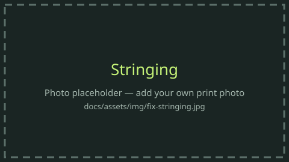
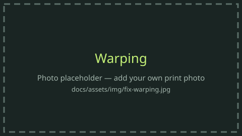
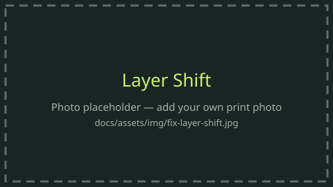
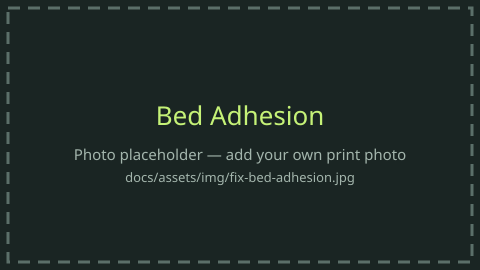

Fix: troubleshooting by symptom¶
Find the symptom, check the causes in order (most likely and cheapest first), and change one thing at a time.
First three questions for any failure
- Is the filament dry? (drying)
- Is the plate clean and correct for this material?
- Is the profile for this exact filament, nozzle, and printer?
Difficulty is easy (clean, dry, or one slider), medium (a test plus a mechanical check), or hard (the printer's mechanics). The same records are in data/troubleshooting.json.
| Defect | What you see | Difficulty | Start here |
|---|---|---|---|
| Stringing | Fine hairs or threads between separate parts of the print. | easy | Dry the spool, then print again before you change retraction. |
| Warping | Corners lift, or the base curls up off the plate. | medium | Close the enclosure, preheat the chamber, and keep drafts and air conditioning off the printer. |
| Layer shift | Layers step sideways, like a staircase, partway up the print. | medium | Fix the warp or the curl. Turn on Z-hop. Cool overhangs more on PLA and PETG. |
| Elephant's foot | The first layers bulge wider than the rest of the part. | easy | Raise Z-offset a little, or run bed leveling again. |
| Under-extrusion | Gaps, thin walls, or missing lines. The part looks starved of plastic. | medium | Slow down, or set a max volumetric speed from a calibration print. |
| Z-banding | Regular horizontal ridges repeating up the walls. | hard | Clean the screws, check the coupler, and make sure Z moves freely. Lubricate only where the maker says to. |
| Bed adhesion | The first layer will not stick, or the part pops off mid-print. | easy | Wash PEI with dish soap and hot water. Wipe with isopropyl alcohol between prints. |
| Wet filament | Popping or hissing at the nozzle, a rough or fuzzy surface, or sudden stringing on a profile that used to work. | easy | Dry it at the temperature and time on the material page, then store it sealed with desiccant. |
| Spaghetti | A loose nest of filament, usually because the part detached or a layer printed in the air. | easy | Stop the print. Fix adhesion: clean plate, Z-offset, brim, and no drafts. |
| Nozzle clog | The extruder clicks, plastic stops coming out, or the print turns hollow partway up. | medium | Heat the nozzle and do a cold pull using your printer's temperatures, or swap the nozzle. |
Stringing¶
Difficulty: easy. Dry the spool before you touch retraction.

| Likely cause | Fix |
|---|---|
| Wet filament (very common with PETG, TPU, PA) | Dry it (table), then re-test before touching settings |
| Nozzle too hot | Drop 5–10 °C, or run a temp tower |
| Retraction too short or slow | Run a retraction test. Direct drive is usually ~0.4–1.5 mm |
| Long travel over open air | Enable avoid crossing walls / combing. Arrange parts closer together |
| Pressure advance off | Calibrate PA / Flow Dynamics |
Source: Prusa KB: Stringing and oozing
Warping¶
Difficulty: medium. Drafts and an open door matter as much as the slicer.

| Likely cause | Fix |
|---|---|
| Large temperature difference between part and room (ABS, ASA, PC, PA) | Enclosure closed, chamber pre-heated, no drafts or AC nearby |
| Too much part cooling | Reduce or turn off the fan for ABS/ASA/PC. Use 10–20 % only for overhangs |
| Weak first-layer grip | Clean the plate (IPA or soap), use glue stick, check first-layer squish |
| Sharp corners, large footprint | Add a brim or mouse ears. Use a draft shield. Round corners in CAD |
| Printing too fast | Slow the first layers and outer walls |
Source: Prusa KB: Warping · Prusa KB: Enclosure guidepost
Layer shifts¶
Difficulty: medium. Listen for a thud. That is a skipped step, not a bad model.

| Likely cause | Fix |
|---|---|
| Nozzle collided with a curled-up part | Fix warping/curling. Enable Z-hop. Increase cooling on overhangs (PLA/PETG) |
| Belt tension off or a loose pulley grub screw | Check belt tension per the maker. Tighten pulley grub screws (one on the shaft flat) |
| Obstruction (cable, filament scrap, spool tangle) | Clear the path. Check the spool feeds freely |
| Accelerations too high for the machine or load | Lower acceleration/speed. Re-run input shaping if the printer has it |
| Motor or driver overheating | Check ventilation around electronics |
Source: Prusa KB: Layer shifting · Ellis: Layer shifting
Elephant's foot¶
Difficulty: easy. The bottom is squished or still soft.
| Likely cause | Fix |
|---|---|
| First layer squished too much (nozzle too low) | Raise Z-offset slightly or re-run bed leveling |
| Bed too hot, so the bottom layers sag | Lower the bed 5–10 °C after the first layer |
| Heavy part on soft bottom layers | Use the slicer's elephant foot compensation (~0.1–0.2 mm), or chamfer bottom edges in CAD (0.5 mm × 45°) |
Source: Prusa KB: Elephant foot compensation
Under-extrusion¶
Difficulty: medium. Not enough plastic is leaving the nozzle.
| Likely cause | Fix |
|---|---|
| Printing faster than the hotend can melt | Lower speed, or set max volumetric speed from calibration |
| Partial clog / worn nozzle | Cold pull or replace the nozzle. CF/GF fills wear brass nozzles quickly |
| Nozzle too close on the first layer | Re-level / adjust Z-offset |
| Dirty or misaligned extruder gears, wrong idler tension | Clean gears, check tension |
| Heat creep (PLA in a hot enclosure) | Open the lid/door for PLA. Check the hotend fan |
| Wet or out-of-spec filament, tangled spool, AMS/CFS feed drag | Dry it, check the spool path and buffer |
| Wrong flow ratio | Run the flow test |
Source: Prusa KB: Under-extrusion
Z-banding¶
Difficulty: hard. Regular ridges are usually the Z axis, not the filament profile.
Regular, repeating horizontal ridges (often matching the lead screw pitch) are usually mechanical. Irregular ridges are usually extrusion or temperature problems.
| Likely cause | Fix |
|---|---|
| Lead screw / Z-coupler misaligned, binding, or dirty | Clean the screws. Check the coupler and that the Z axis moves freely. Lubricate only where the maker's maintenance guide says to |
| Layer height not a multiple of the Z motor's full step | Use "magic numbers" (e.g. 0.04 mm multiples on many 8 mm-lead machines) |
| Bed or hotend temperature oscillating | Run PID tuning / check thermistor seating |
| Inconsistent filament diameter, or wet filament | Try a known-good spool |
| Wobbly frame / loose gantry | Check frame screws and eccentric nuts/rollers |
Source: Prusa KB: Regular printer maintenance (MK4/MK3.9) (lead-screw care). Banding causes are general community knowledge, verify for your printer.
Bed adhesion¶
Difficulty: easy. Clean plate, correct Z-offset, then temperature.

| Likely cause | Fix |
|---|---|
| Fingerprints or oil on the plate | Wash with dish soap and hot water (PEI). Wipe with IPA between prints |
| Z-offset too high (no squish) | Lower slightly. Lines should be flattened and touching, not transparent |
| Wrong plate or release agent for the material | PETG on smooth PEI → glue as a release layer. ABS/ASA/PC/PA → glue stick |
| Bed temperature off | Use the matrix range. Too hot can also hurt (PLA sagging) |
| Drafts / cold room | Close the enclosure. Avoid fans and AC |
| Tiny contact area | Add a brim. Re-orient the part |
Source: Prusa KB: First layer issues · Ellis: Build surface adhesion
Wet filament¶
Difficulty: easy. If it pops at the nozzle, dry it before you retune the profile.
| Symptom | Fix |
|---|---|
| Popping or hissing at the nozzle, steam | Dry it (temps & times) |
| Bubbles, rough or fuzzy surface, loss of gloss | Dry it, then store it sealed with desiccant |
| Sudden stringing on a profile that used to be fine | Dry before re-tuning retraction |
| Weak layers, brittle filament that snaps | Dry it. If it's still brittle, the spool may be degraded |
| Supports on PA fused or hard to remove | Remove supports within ~2 h of printing (Bambu) |
Source: Prusa KB: Drying filament · Bambu Wiki: Filament drying
Spaghetti¶
Difficulty: easy. A nest of loose filament means the part let go, or a layer printed in the air.
Stop the job. Do not peel hot plastic off the nozzle with your fingers. Clear the cooled blob, then fix bed adhesion and watch the next first layer. If the printer has a camera failure check, turn it on for long prints.
Nozzle clog¶
Difficulty: medium. The extruder clicks and the print goes hollow.
Heat the nozzle and try a cold pull at the temperatures in your printer's guide, or fit a fresh nozzle. On PLA, open the enclosure so heat creep does not soften the filament above the melt zone. If you print carbon fiber, the nozzle should be hardened, not plain brass. The same causes are listed under under-extrusion.
Add your failure
Got a good photo of one of these? Save it as docs/assets/img/fix-<symptom>.jpg, update the image link above, and open a PR. See Contribute. My private failure log is a good source of these photos.